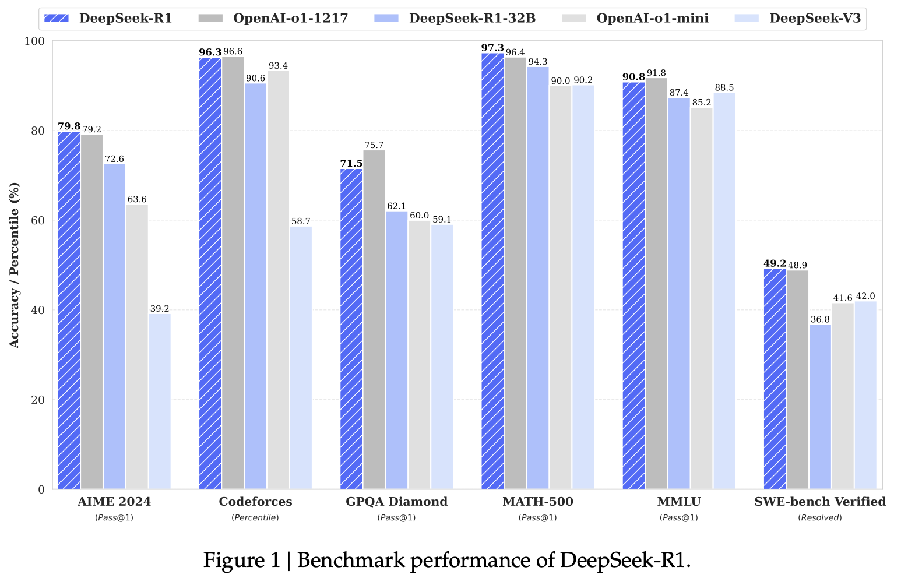
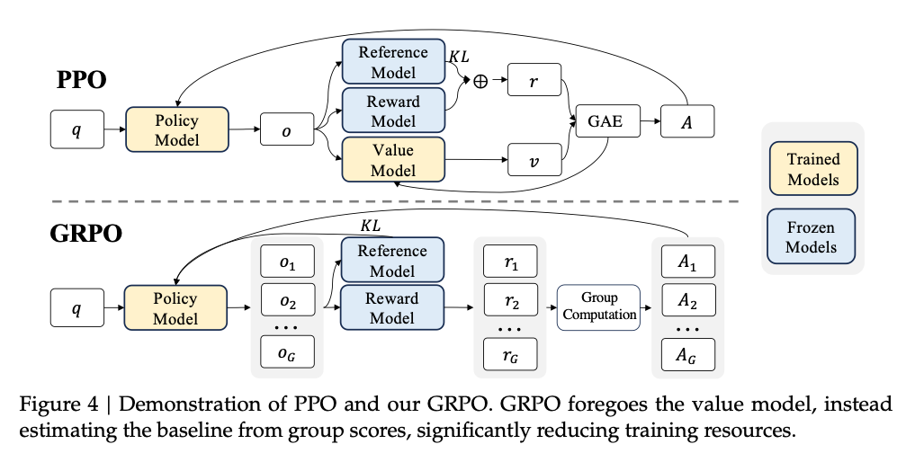
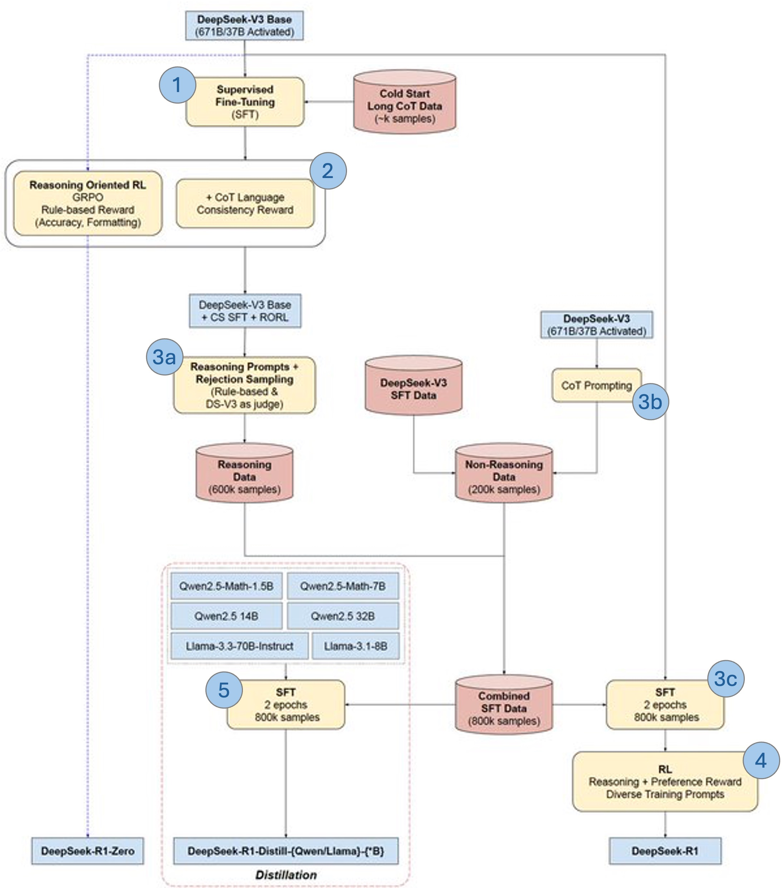

Overfit#10: DeepSeek-R1
On January 20, 2025, DeepSeek introduced a new series of reasoning models: DeepSeek-R1 and DeepSeek-R1 Zero1. Alongside these, they open-sourced six distilled models (1.5B, 7B, 8B, 14B, 32B, and 70B), derived from DeepSeek-R1 and built on Qwen and Llama.
What sets DeepSeek apart is its innovative post-training approach, enhancing reasoning capabilities while maintaining model helpfulness and readability. But what’s behind this new paradigm? Let's find out!

DeepSeek-R1 Zero
RL Is All You Need
One of DeepSeek-R1 Zero's key contributions is its direct application of Reinforcement Learning (RL) to train reasoning capabilities. Instead of relying on Supervised Fine-Tuning (SFT) with human-annotated reasoning examples, DeepSeek-R1 Zero optimizes reasoning purely through an RL-based reward system.
Why RL instead of SFT?
Training models on high-quality reasoning datasets via SFT is effective but comes with limitations:
- Data collection is expensive: Human annotations for reasoning (e.g., Chain of Thought (CoT) examples) require significant effort and cost.
- Scalability issues: Expanding curated datasets to improve generalization is difficult.
- Overfitting to human patterns: Models trained on human demonstrations tend to imitate reasoning rather than discover optimal strategies.
Note
This aligns with a recent DeepMind's study, “SFT Memorizes, RL Generalizes” (2025) which suggests that RL-trained models tend to generalize better than those trained via SFT alone.
RL requires an environment to interact with. What does a reasoning training environment look like?
DeepSeek-R1 Zero uses two key reward mechanisms:
- Format Rewards: Encourage structured reasoning by introducing
<think>and</think>tokens, prompting the model to generate explicit reasoning steps. - Accuracy Rewards: Evaluate correctness using deterministic tasks, such as math problems with fixed solutions or programming challenges with unit tests.
By maximizing its rewards over time, the model learns to refine its reasoning strategies. Interestingly, the model finds that "thinking" with longer responses leads to better rewards. The plot below shows how the response length grows with the number of RL training steps. This is a similar observation as scaling test-time compute observed by OpenAI.
Additionally, the performance of DeepSeek-R1-Zero can be further augmented through the application of majority voting, as depicted in this second plot.
GRPO
Before introducing R1, I wanted to take a moment to highlight Group Relative Policy Optimization (GRPO), the policy-based RL algorithm behind DeepSeek-R1 Zero. GRPO was introduced by DeepSeek a few months earlier in DeepSeekMath2. To understand its novelty, let’s first look at PPO.
Proximal Policy Optimization (PPO) is the most widely used RL algorithm for aligning LLMs. As a policy-based RL method, it directly learns a policy (in this case, the LLM) to maximize rewards, which are typically computed by a reward model trained on human preferences. Additionally, PPO incorporates a value model (the critic) to reduce gradient variance. The advantage function in PPO, defined as: \(A_t = r_t - v_{\pi_\theta(q,o<t)}\) measures how much better (or worse) a reward is compared to the expected return.

What is the issue with PPO?
PPO relies on a value model \(v_{\pi_{\theta}}\) (the critic) which must be trained alongside the policy, adding computational overhead. GRPO addresses this by replacing the trainable value function with the normalized mean reward of a set of sampled answers. In GRPO, the advantage is how good a reward is relative to the other answers: \(\hat{A}_{i,t} = \tilde{r}_i = \frac{r_i - \text{mean}(\mathbf{r})}{\text{std}(\mathbf{r})}\)
For each question \(q\), GRPO samples a group of \(G\) outputs \((o_1, o_2,··· , o_G)\) from the old policy \(\pi_{old}\) and optimizes the policy model using the following objective1:
Note 1: The advantages \(A_{i,t}\) are independent of the token position \(t\). Every token of an output \(o_i\) receives the same advantage value, even though the reward is typically obtained at the last token.
Note 2: The GRPO paper2 explores alternatives to compute advantages. However, DeepSeek-R1 adopts a simpler approach, where the rewards are only assigned at the end of the sequence. The loss expression simplifies a bit (no more summation over \(t\)).
\[ L_{\text{GRPO}}(\theta) = \mathbb{E} \left[ \frac{1}{G} \sum_{i=1}^{G} \left( \min \left( \frac{\pi_\theta}{\pi_{old}} A_i, \text{clip}(\frac{\pi_\theta}{\pi_{old}}, 1 - \epsilon, 1 + \epsilon) A_i \right) - \beta D_{KL}(\pi_\theta || \pi_{ref}) \right) \right] \]
There is one last concept we didn't cover: the reference model \(\pi_{ref}\). One common issue of RL is reward hacking where the model exploits flaws in the reward model rather than genuinely improving. To prevent this, PPO and GRPO constrain the RL model to stay "close" from the pre-trained/SFT reference. In PPO, this is done at the token level (see InstructGPT3, page 9, section 3.5). In GRPO, they use a KL-divergence that they consider easier. This explains the difference of the "KL arrows" in the PPO vs GRPO picture above.
DeepSeek-R1
Despite its strong reasoning capabilities, DeepSeek-R1 Zero has notable drawbacks. Due to its "no human in the loop" training process, the model frequently switches languages while reasoning, markdown outputs are often incorrect, and responses are sometimes unhelpful or misaligned with human expectations.
DeepSeek-R1 tries to address these weaknesses by first finetuning a pretrained checkpoint V3-Base (step 3c) on a high-quality SFT dataset (steps 1/2/3a/3b), and then aligning the model with a mixture of RHLF/R1-Zero RL pipeline (step 4).

SFT data collection
Reasoning data
The first step is to build a "poor" reasoning model to generate lots of CoTs. The recipe is a refined version of the R1-Zero's training recipe. Starting from a pre-trained base model V3-Base:
- Step 1 - Cold Start: Finetune on a small amount of CoTs. This short SFT phase helps mitigate the unstable cold start phase of RL training.
- Step 2 - RORL: Learn reasoning through Reasoning-oriented Reinforcement Learning (RORL). It is essentially the R1-Zero training recipe (GRPO) with an extra reward for language consistency.
We now have a "poor" reasoning model. We can utilize it to generate lots of CoTs.
- Step 3a: Rejection Sampling and Supervised Fine-Tuning: Given a set of CoT prompts, sample multiple CoT answers with the RORL model. The answers are then assessed either by correctness criteria or LLM as a judge. Only the best answers are collected. Additional filtering is performed to remove responses with mixed languages or long verbose paragraphs for instance. \(\rightarrow\) This gives the 600k reasoning samples dataset.
Non-reasoning data
To get a helpful chat model, we need some conversational examples. A complementary non-reasoning dataset is thus built by merging two sources. The first half consists of writing, factual QA examples sampled from DeepSeek-V3 (Step 3b). The second half is a repurposed subset of the DeepSeek-V3's SFT dataset from previous work, which provides additional supervised fine-tuning examples.
\(\rightarrow\) This gives the 200k non-reasoning samples dataset.
Model training (SFT + RL)
We have the data. Time to train the final model!
DeepSeek-R1's training procedure follows the SFT + RL framework. The SFT phase (step 3c) is standard finetuning over the 800k dataset. The RL phase is a mix of DPO for human alignment and of R1-Zero RL technique for reasoning. The result is DeepSeekR1, the model that made the headlines a few weeks ago.
Aside from 671B R1 model, DeepSeek additionally released smaller models. Note that these models are "only" distilled Llama and Qwen2 checkpoints, fine-tuned on the 800k high-quality dataset of step 3. No RL is used.
One may ask why using SFT over RL after all the promising results we mentioned above. Based on their experiments, they claim that smaller models benefit more from distillation than from going through the whole R1 pipeline.
Conclusion
To conclude, this is a truly interesting paper from DeeSeek, with lots of engineering involved. I am eager to see what they are cooking up for their next model iterations.
I hope you enjoyed reading this technical deep dive. If so, feel free to share it and connect 😊
References
-
DeepSeek-R1: Guo, D., Yang, D., Zhang, H., Song, J., Zhang, R., Xu, R., ... & He, Y. (2025). Deepseek-r1: Incentivizing reasoning capability in llms via reinforcement learning. arXiv preprint arXiv:2501.12948. ↩↩
-
DeepSeekMath: Shao, Z., Wang, P., Zhu, Q., Xu, R., Song, J., Bi, X., ... & Guo, D. (2024). Deepseekmath: Pushing the limits of mathematical reasoning in open language models. arXiv preprint arXiv:2402.03300. ↩↩
-
InstructGPT from OpenAI: Ouyang, L., Wu, J., Jiang, X., Almeida, D., Wainwright, C., Mishkin, P., ... & Lowe, R. (2022). Training language models to follow instructions with human feedback. Advances in neural information processing systems, 35, 27730-27744. ↩